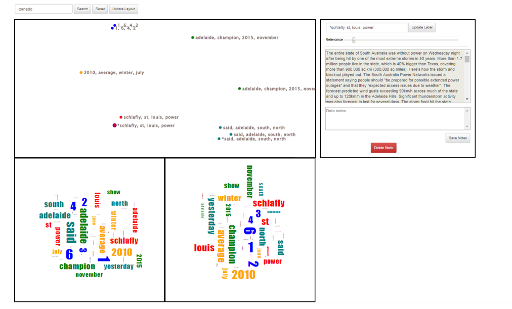

Cosmos
Cosmos is a visual analytics system
to support exploration of large text datasets. This original version
was developed by Michelle Dowling and Adam Binford to explore supporting
text analytics by combining ideas from
Andromeda with those from
StarSPIRE.
Since then, many students and researchers have contributed
to this project, culminating in CosmosOmniview (pictured and described
below).

In the initial development of Cosmos, the goal was to take the
visual "near = similar" metaphor from Andromeda with a multimodal
pipeline structure similar to StarSPIRE, which enabled querying
features. As such, this system enables projection-level interactions
(like those in Andromeda) and document relevance interactions
(similar to Andromeda's parametric interactions) while only showing
the user the most relevant data to their investigation
(similar to StarSPIRE). In so doing, users maintain an accurate sense
of how similar the displayed documents are without being
overwhelmed with the number of documents on the screen.
In conjunction with traditional keyword search foraging (i.e., using a search bar),
Cosmos also uses automated foraging to show the user relevant
documents based on how they interact with the system. As such, this
automated foraging mechanism utilizes the same user interest model that
is used by the projection algorithm to also drive the foraging algorithm.
This new method for automated foraging is also used in
Centaurus and is currently under review.
After the initial development of Cosmos,
the multimodal architecture enabled exploration into additional
possibilities of combining existing research for the sake of an interactive
"near == similar" visualization of text data that uses this automated
foraging. These explorations include:
-
[DEPRECATED] Photon: A 3D version of
Cosmos that uses X3DOM. The previous version of this interface
is deprecated as well.
-
[DEPRECATED] Oculus with Pipeline:
An immersive version of Cosmos that uses the Oculus.
-
[BUGGY] CosmosElasticsearch: A version
of Cosmos that uses an Elasticsearch
Data Controller as opposed to relying on flat files. [May experience
slow or unresponsive page. Please contact us if this is the case.]
-
[DEPRECATED] CosmosTwitter: A version
of Cosmos that uses a Twitter-based Data Controller as opposed to
relying on flat files.
-
[BUGGY] CosmosComposite: A version
of Cosmos that uses the ideas of the
composite matrix described by Cheng and Mueller
to display documents and terms in the same, interactive
projection. However, we found that this projection method often
led to visualizations that seemed "polarized" based on the terms,
meaning the perception of the similarity between documents was
distorted. Ultimately, we decided that this distortion was too severe,
often leading to the perception that documents hardly contained
any similarities. This distortion is at least in part due to the
sparse nature of the data (i.e., terms tend to not appear in many
documents within a corpus). [Interactions with terms usually results
in errors.]
-
[BUGGY] CosmosRadar: A version of Cosmos that
uses the
Intent Radar by Ruotalo et al.
to visualize the similarity of the documents as the angle around
a center point, and the relevance as both the node size and the
node's distance from the center point. [Our algorithm used to
process the projection-level interactions does not work fully as
intended, but this version of Cosmos still serves as a useful and
interesting exploration.]
-
[BUGGY] CosmosOmniview: A version of
CosmosElasticsearch that is meant to work in conjunction with a
map visualization
to only display documents within a specified geofence. In addition,
this version uses an interactive topic model, which enables interaction
with even larger datasets. The topic model has information
displayed within two word clouds: one for the the top five occurring
terms, and one for the top five unique terms in the top five topics.
A screenshot of this version of Cosmos is depicted above, with
further details provided in
Interactive visual analytivs for sensemaking with big text by Dowling et al.
[Map visualization does not properly display documents, and the
geofence may not work properly when foraging for documents in
CosmosOmniview. Additionally, you may experience a slow or unresponsive
page. Please contact us if this is the case.]
-
SIRIUS and Centaurus: Although a
visualization of the documents and their similarity is useful, so too
is a visualization of the terms that appear within the documents.
SIRIUS and Centaurus explore providing one visualization for each
while connecting these visualizations such that an interaction in
either visualization can affect both visualizations, providing
rich feedback and enabling deep exploration after each
interaction.
Most relevant publications:
Other relevant publications and links:
- Bradel L, North C, House L. Multi-model semantic interaction for text analytics. In 2014 IEEE Conference on Visual Analytics Science and Technology (VAST) 2014 Oct 25 (pp. 163-172). IEEE.
- Andromeda
- Cheng S, Mueller K. The data context map: Fusing data and attributes into a unified display. IEEE transactions on visualization and computer graphics. 2015 Aug 13;22(1):121-30.
- Ruotsalo T, Peltonen J, Eugster M, Głowacka D, Konyushkova K, Athukorala K, Kosunen I, Reijonen A, Myllymäki P, Jacucci G, Kaski S. Directing exploratory search with interactive intent modeling. In Proceedings of the 22nd ACM international conference on Information & Knowledge Management 2013 Oct 27 (pp. 1759-1764).
- SIRIUS and Centaurus
Related research